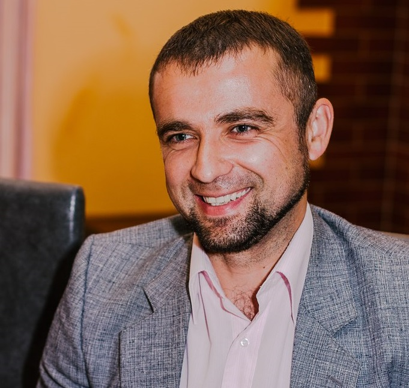

VASILI KULAKOU
Objective: Data Analyst
Personel data:
Birth date: 17.11.1983
Nationality: Belarus
Marital status: married
- Contact information
- Phone number: +375295424999
- Email: vasili-kulakov@yandex.ru
- LinkedIn profile
I have over 9 years of teaching experience in higher education and 12 years of scientific research background. In 2014 I defended a PhD in economics and in 2016 got the associate professor rank.
The majority of my duties as a lecturer and associate professor are connected with developing and implementing learning courses on different educational levels.
WORK EXPERIENCE 👔
- December 2019 – September 2020 – associate professor of the Department of Marketing and International Management at Polessky State University, Pinsk, Republic of Belarus.
- August 2018 – August 2019 – associate professor of the Department of International business and marketing at The Yanka Kupala State University of Grodno, Grodno, Republic of Belarus.
- August 2017 – August 2018 Head of the Department of Economic and Mathematical Modeling of Economic Systems in Agribusiness, Belarusian State Agriculture Academy.
- September 2012 – August 2017 – lecturer, senior lecturer, associate professor of the Department of Economics and International Economic Relations in the agro-industrial complex, Belarusian State Agricultural Academy, Gorki, Mogilev region, Republic of Belarus.
- 2011 – August 2012 – lecturer of the Department of Finance and Control in Agriculture, Belarusian State Agricultural Academy, Gorki, Mogilev region, Republic of Belarus.
- August 2008 – December 2008 – Deputy Chairman in the agricultural enterprise “Shirki”, Postavy District, Vitebsk Region, Republic of Belarus.
- August 2006 – August 2007 – chief economist in the agricultural enterprise “Shirki”, Postavy District, Vitebsk Region, Republic of Belarus.
EDUCATION 👨🎓
- 2008–2011 – Belarusian State Agricultural Academy, Faculty of Economics, PhD course in economics;
- 2007–2008 – Belarusian State Agricultural Academy, Faculty of Economics, Master’s degree in economics;
- 2001–2006 – Belarusian State Agricultural Academy, Faculty of Economics, Specialty: World Economics; economist.
QUALIFICATION ✅
- 2016 – Associate professor;
- 2014 – PhD degree in economics.
SKILLS 💼
- good communication and people skills;
- strong analytical and research skills;
- marketing research and analysis;
- managerial skills;
- confident in Microsoft office packages;
- driving license – B.
LANGUAGES 👅
- Mother tongue - Russian;
- English - C1 (IELTS certificate 7.0);
- Polish - B 1.
RECENT ONLINE TRAINING COURSES 📆
- Business fundamentals: effective communication;
- Learning and memory: understandings from educational neuroscience;
- Neuroleadership and conceptual approaches in educational neuroscience.